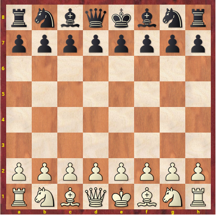

<Doctype HTML></Doctype>
<html> 
<head>
    <title>Welcome to chessbase</title>
<meta   charset="utf-8">
    <meta name="keywords" content="chess, шахи, шахматы">
    <meta name="description" content="play chess">
   <link rel="stylesheet" href="css/style_page1.css" type="text/css">
    <style type="text/css">
.but1 {color:white;}
.but2, .but3 {float:left;}
.but2 {height:32px; line-height:32px; background:blue; padding:0 7px;}
.but3 {border-width:16px 0 16px 16px; height:0;}
.but3 {border-style:solid; border-color:transparent transparent transparent blue;}
 
.but4 {color:white;}
.but5, .but6 {float:left;}
.but6 {height:32px; line-height:32px; background:blue; padding:0 7px;}
.but5 {border-width:16px 16px 16px 0; height:0;}
.but5 {border-style:solid; border-color:transparent blue transparent transparent;}
</style>
      </head> 
<body >
   
 <form action="https://blitz.chessbase.com/"  target="_blank">
     <button> 1 minute</button> 
       <button >  3 minutes</button> 
     <button> 5 minutes</button> 
    <button> 15 minutes</button> 
    <button> 30 minutes</button> 
    <button> 1 hour minutes</button> 
    <button> Fisher control</button> 
       </form>
        
    <table width="100%">
        <tr> 
    <td></td>
    
<td><script type="text/javascript" src="https://ajax.googleapis.com/ajax/libs/jquery/1/jquery.min.js" align:rigth ></script>
<script type="text/javascript" src="https://comet-server.ru/CometServerApi.js" ></script>
<script type="text/javascript" src="https://comet-server.ru/doc/html_chat.js" ></script>
<link rel="stylesheet" type="text/css" href="https://comet-server.ru/doc/html_chat.css">    
<!-- Осталось настроить сам чат и запустить, для этого пишем небольшой скрипт. -->
<div id="html-chat" align:right></div>
<style>
/* Здесь настроим css стили для чата*/
.holder-html-chat{ border: 1px solid #ccc;padding:10px;background-color: #fff;width: 600px;}
.html-chat-history{ max-width: 200px; overflow: auto;max-height: 200px; border: 1px solid #ccc;padding: 5px;}
.html-chat-js-name{ margin-top:10px; }
.html-chat-js-input{ max-width: 200px;max-height: 100px;width: 200px;margin-top:10px; }
.html-chat-js-button-holder{ margin-bottom: 0px;margin-top: 10px; }
.html-chat-js-button-holder input{ width: 100px; }
.html-chat-js-answer{ float:right; }
.html-chat-js-answer a{ color: #777;font-size: 12px; font-family: cursive;}
.html-chat-js-answer a:hover{ color: #338;font-size: 12px; font-family: cursive;}
.html-chat-msg{ margin: 0px; }
</style>

<script>

   
    $(document).ready(function()
    {
       // Запуск api комет сервера
       CometServer().start({dev_id: 15 }) // Идентификатор разработчика на comet-server.ru

       // Запуск чата. Передаём ему элемент в котором надо создать окно чата.
       htmljs_Chat_Init( $("#html-chat") )
    });
    </script></td>
     
    </tr>
    </table>
 
 
 
 
    </a>  
</body>
</html>